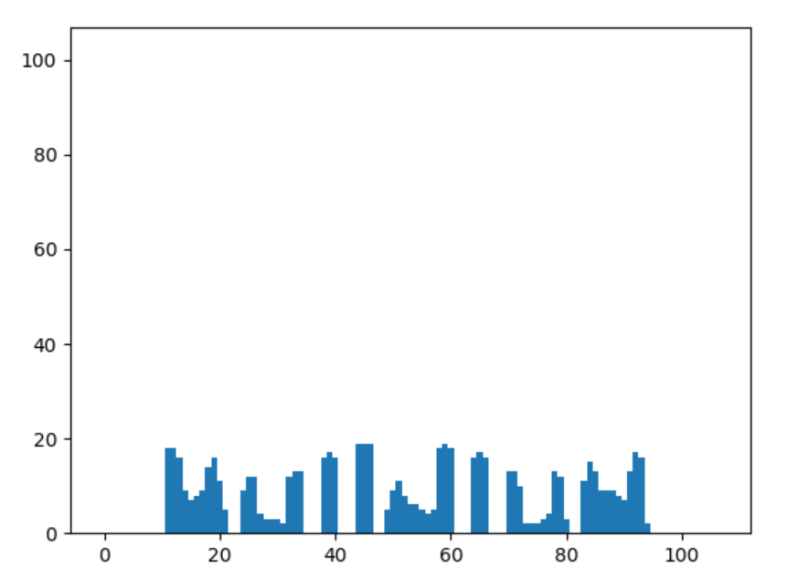

2019/04/11
BGR値によるヒストグラムを作成した。
↑ この画像を、

↑ x軸に沿ってヒストグラム化したもの。
"i" と "l" が案外はっきり分けられたので、文字間に数ピクセルの空白を挟む処理ができれば
その後の外接矩形をうまくとれるかなと思った。
…が、iとlがうまく取得できない原因はfindContoursの際にwidthが小さすぎるものをはじいていたからで、
字間は全然関係なかったらしく、ヒストグラム化関数はせっかく作ったもののお蔵入りになってしまった…。
勉強になったから良しとするか…。
目的を定めるのが苦手らしく、寄り道してばかりになってしまっている。
1. "i" の予測精度を高める
2. BingのスペルチェックAPIに投げる
3. 背景除去
4. webアプリ化
あたりをやれば少しは形になるだろうか。
あと1ヶ月くらいで完成させたいので予定を立てて挑もうと思う。
↓お蔵入りになったヒストグラム化関数のコード。
def histgram(im, im_width, im_height):
histgram = []
for i in range(width):
px = img[0:im_height, i]
#print("px"), print(px)
#白pxがあった場合に1をreturn
hist_n = [1 for x in px if (x == [255, 255, 255]).all()]
histgram.append(len(hist_n))
#グラフ表示
plt.bar(range(im_width), histgram, width=1.0)
plt.ylim(0, im_height)
plt.show()